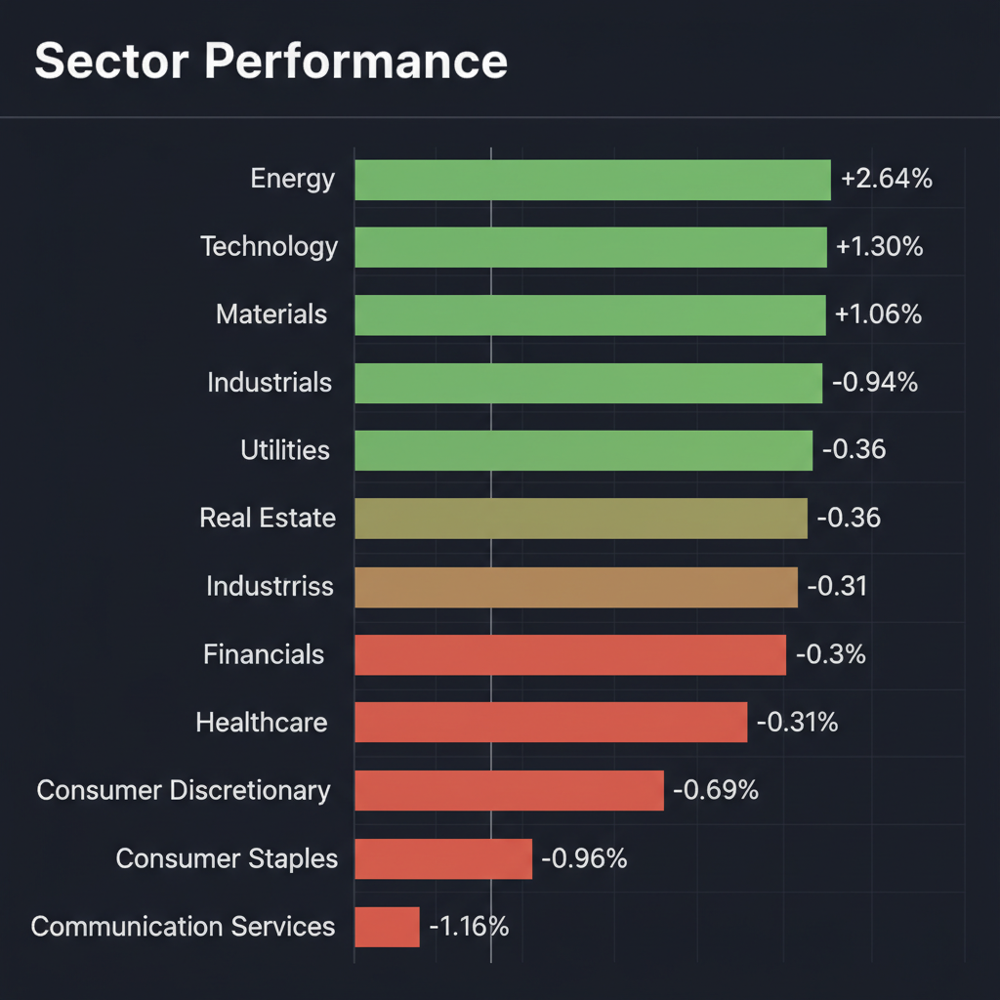
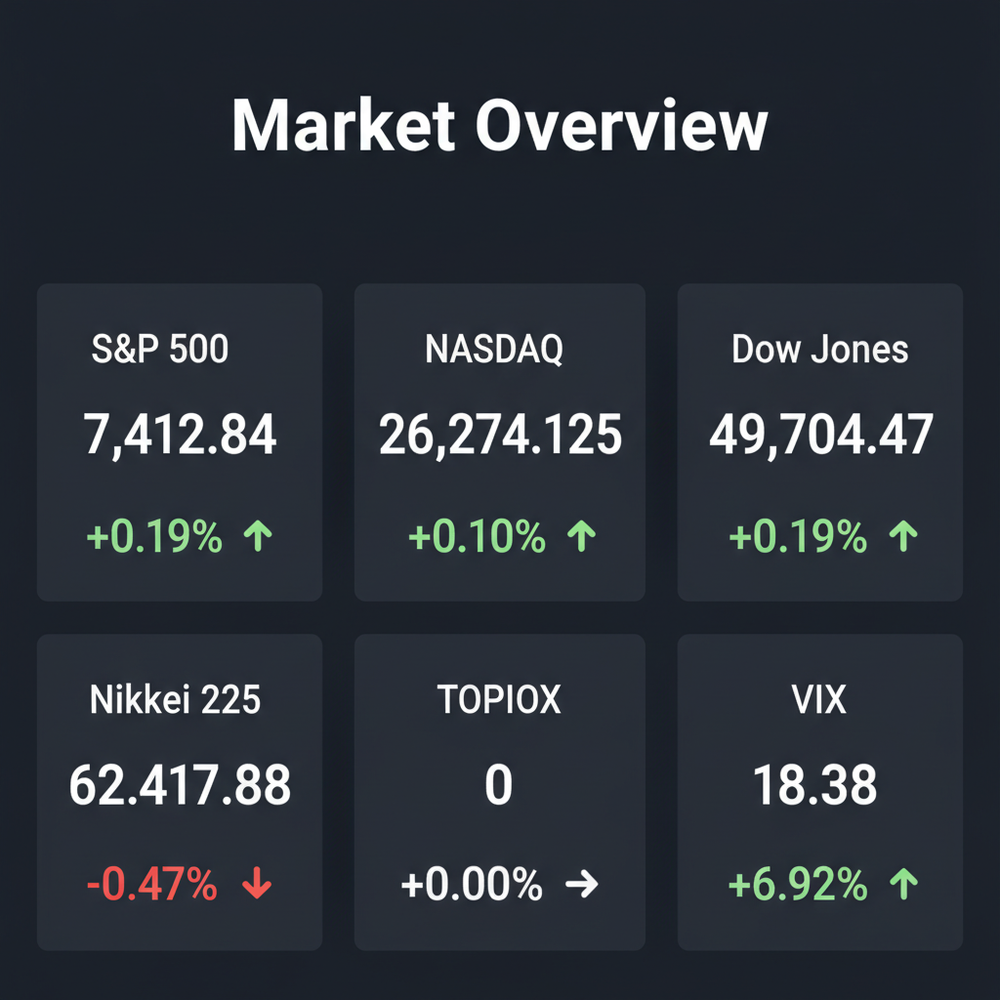

Daily Investment Report - 2026-05-12
Generated: 2026/5/12 7:31:35


投資チームミーティングの分析結果を統合した、投資家向けの最終レポートをお届けします。
1. エグゼクティブサマリー
- 現在の市場はAI主導の熱狂により主要指数が高値圏にある一方、VIX指数の急伸（+6.92%）が示す通り、水面下でボラティリティ急拡大への警戒が極限まで高まっています。
- 中東・台湾の地政学リスクとインフレの粘着性が交錯する中、過熱した大型テック株から、実需と価格転嫁力を持つ中小型株や防衛・エネルギーセクターへの資金ローテーションが急務です。
- 投資家は目先の楽観論に追随せず、下値保護（ヘッジ）の構築とキャッシュ比率の引き上げを行い、来るべき調整局面に備えた厳格なリスク管理を優先すべき局面です。
2. 注目銘柄リスト
強気（買い推奨）
- ヘリオス・テクノロジーズ（HLIO） [中小型・時価総額数千億円規模]: 好決算と強気な業績見通し（+7%上昇）を発表しており、サプライチェーンの正常化と価格転嫁の成功により、着実にフリーキャッシュフローを稼ぐ質の高い企業であるため。
- Qnity（ティッカー非公開） [中小型・時価総額数百億円規模]: 決算での業績上振れと上方修正（beat-and-raise）が期待されており、期待先行ではなくAIを「実需」としてマネタイズできている希少な成長企業であるため。
- テラドローン（非上場/グロース市場銘柄） [小型・時価総額数十億円規模]: 産業用ドローンの国産化という国策テーマに乗り、防衛事業参入による圧倒的なTAM（獲得可能な最大市場規模）の拡大が見込まれる次世代のディスラプター候補であるため。
- バイセル（7685） [中小型・時価総額数百億円規模]: インフレによる物価高騰下で強固なリユース需要を取り込み、出張買取を軸とした高い粗利益率と資本効率（ROE）を誇るため下値リスクが限定的です。
中立（様子見）
- PACSグループ（PACS） [中小型]: 決算とガイダンス上方修正により株価が16%急騰したものの、バリュエーションの急拡大に伴い安全マージンが剥落しており、高値掴みのリスクが警戒されるため。
- VirTra（VTSI） [小型]: 警察・軍隊向けVR訓練という参入障壁の高いニッチトップ企業ですが、Q1決算でのネガティブサプライズが構造的な収益悪化か一時的要因かを見極める必要があるため。
弱気（警戒）
- BuzzFeed（BZFD） [小型]: Q1決算で深刻な収益減と予想未達が確認されており、マクロ経済の不透明感から真っ先に広告予算が削られる典型的なバリュートラップであるため。
- MARA Holdings（MARA） [中小型]: Q1決算が市場予測を大幅に下回っており、ファンダメンタルズの深刻な悪化が露呈しているため投資対象から除外すべきです。
3. セクター推奨ランキング
イラン制裁やUAEの動向など中東の地政学リスクに対する最も直接的で強力なヘッジとなります。また、インフレ再燃時にも強く、テクニカル的にも直近高値のブレイクアウト初動を示しています。
台湾有事リスクや自国内サプライチェーン回帰の恩恵を直接受けます。強固なバランスシートを持ち、インフレ下でも価格転嫁ができる筋肉質な企業が集中しています。
- 3位：産業用AI・ロボティクスセクター（ハードウェア実装）
単なる「AI」というバズワードで買われるソフトウェア企業ではなく、深刻な人手不足やコスト削減課題を直接解決し、マネタイズの道筋が明確なハードウェア・AI実装企業への資金流入が期待されます。
- 最下位：一般消費財・生活必需品セクター（XLY, XLP）
エネルギーコストの上昇、高金利の長期化、そしてGMに見られるような人員削減による雇用環境の軟化が消費者の購買力を圧迫し、企業の利益率低下（マージン・スクイーズ）が直撃するため回避を推奨します。
4. 今週の注目イベント
- 近日：米国インフレ指標の発表（金利政策の方向性を決定づける最重要マクロデータ）
- 近日：トランプ大統領の中国訪問と米中首脳会談（テスラ、アップル、ブラックロックのCEO同行による貿易・AI覇権・地政学の交渉）
- 近日：Qnityなど中小型AI・テック関連企業の四半期決算および業績見通し（ガイダンス）の発表
5. リスク要因
- VIX指数急伸と相場のダイバージェンス：株価指数が最高値圏にある中でVIXが急伸しており、機関投資家が水面下で急激な下落ヘッジを構築している（相場クラッシュの予兆）。
- 中東全面衝突とインフレ再燃：トランプ大統領の和平案拒否や軍事衝突の拡大により原油価格が急騰した場合、インフレが再燃し、AI株の高バリュエーションを支える利下げ期待が完全に崩壊するリスク。
- 台湾有事リスクの過小評価：予測市場で20%とされる台湾封鎖が現実になれば、世界の最先端半導体サプライチェーンが即座に停止し、テクノロジーセクター全体が致命的な打撃を受けるリスク。
- 完璧なガイダンスへの極端な依存：市場が「完璧な成長シナリオ」を織り込みすぎているため、決算でわずかでも業績見通しを下回れば、容赦のないパニック売りが発生する脆弱な需給構造。
6. アクションアイテム
- 株式ポジションの縮小と現金化：全体の株式エクスポージャーを直ちに縮小して利益確定を進め、想定外のショックに備えてキャッシュ（現金）比率を大幅に引き上げてください。
- エネルギーETFの打診買い：地政学リスクとインフレ再燃に対する保険として、モメンタムが強いエネルギーセクター（XLE）へのオーバーウェイト（買い増し）を実行してください。
- 中小型バリューへの資金ローテーション：高PERの期待先行型AI銘柄を売却し、強固なフリーキャッシュフロー創出力を持つ「Beat and Raise（上振れと上方修正）」達成済みの中小型株へ資金を振り向けてください。
- 下値保護（プットオプション）の購入：VIXコールオプションやS&P 500のプットオプションを購入し、突発的なヘッドライン（台湾・中東リスク）によるギャップダウン暴落に備えたヘッジを直ちに構築してください。